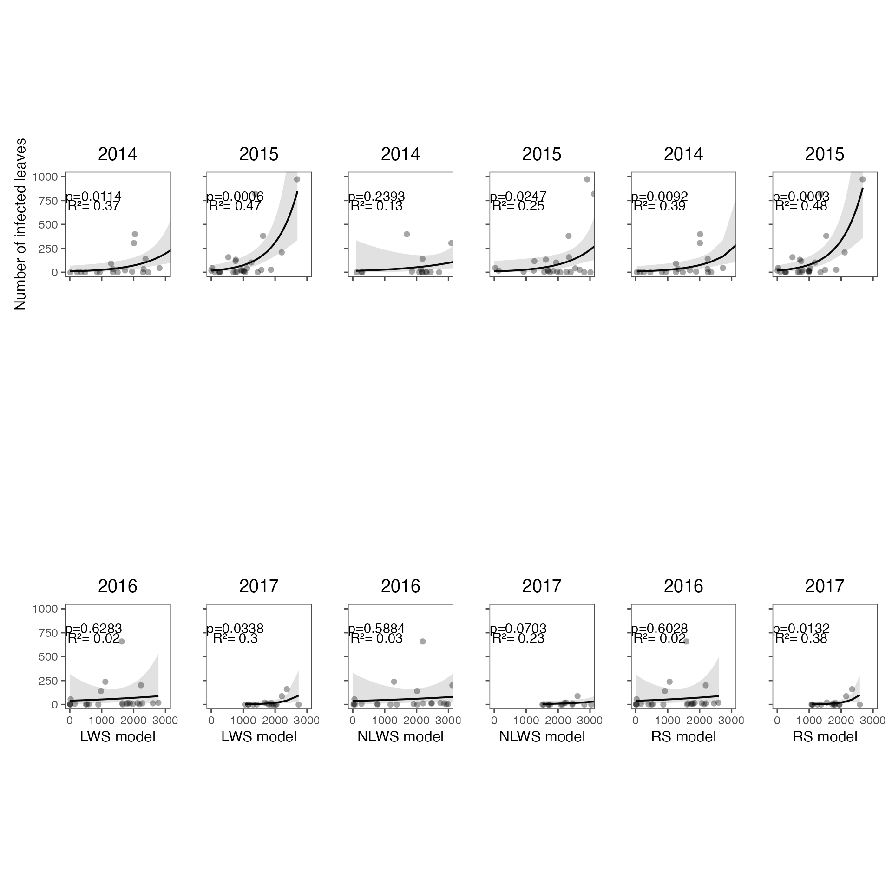
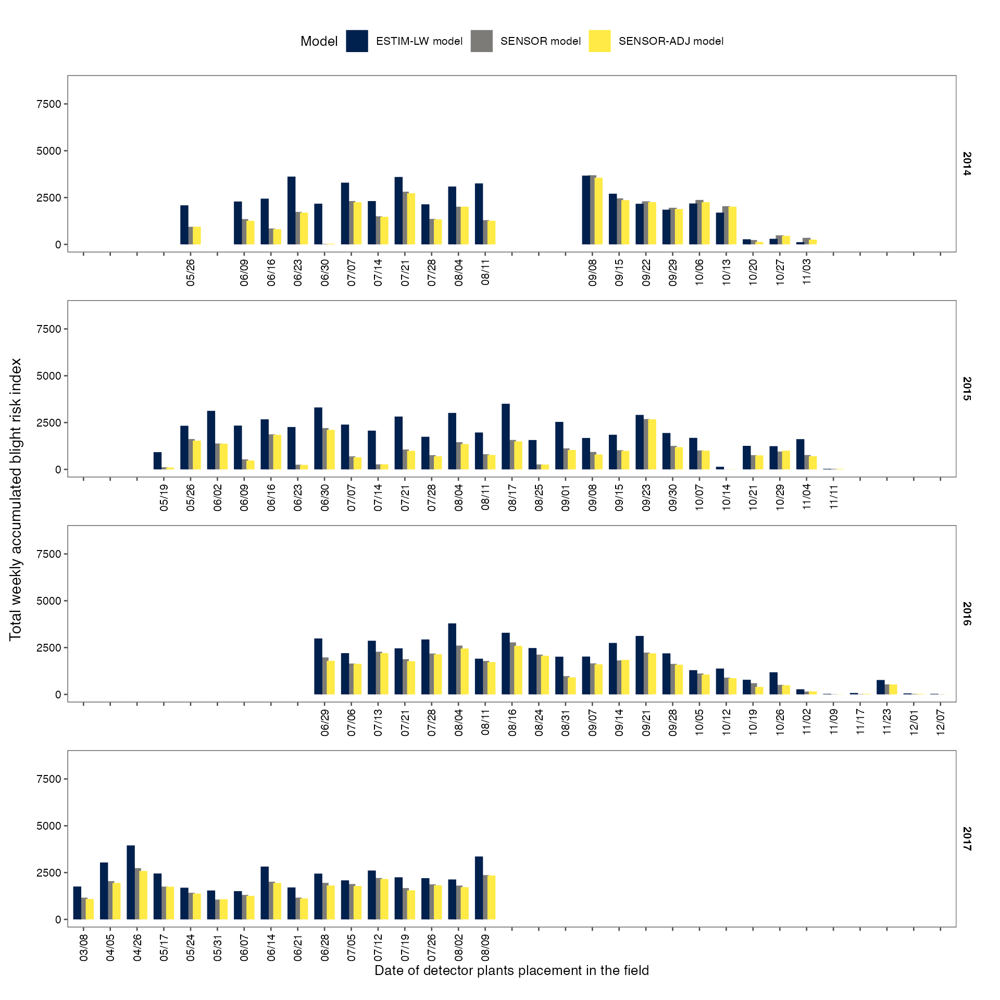
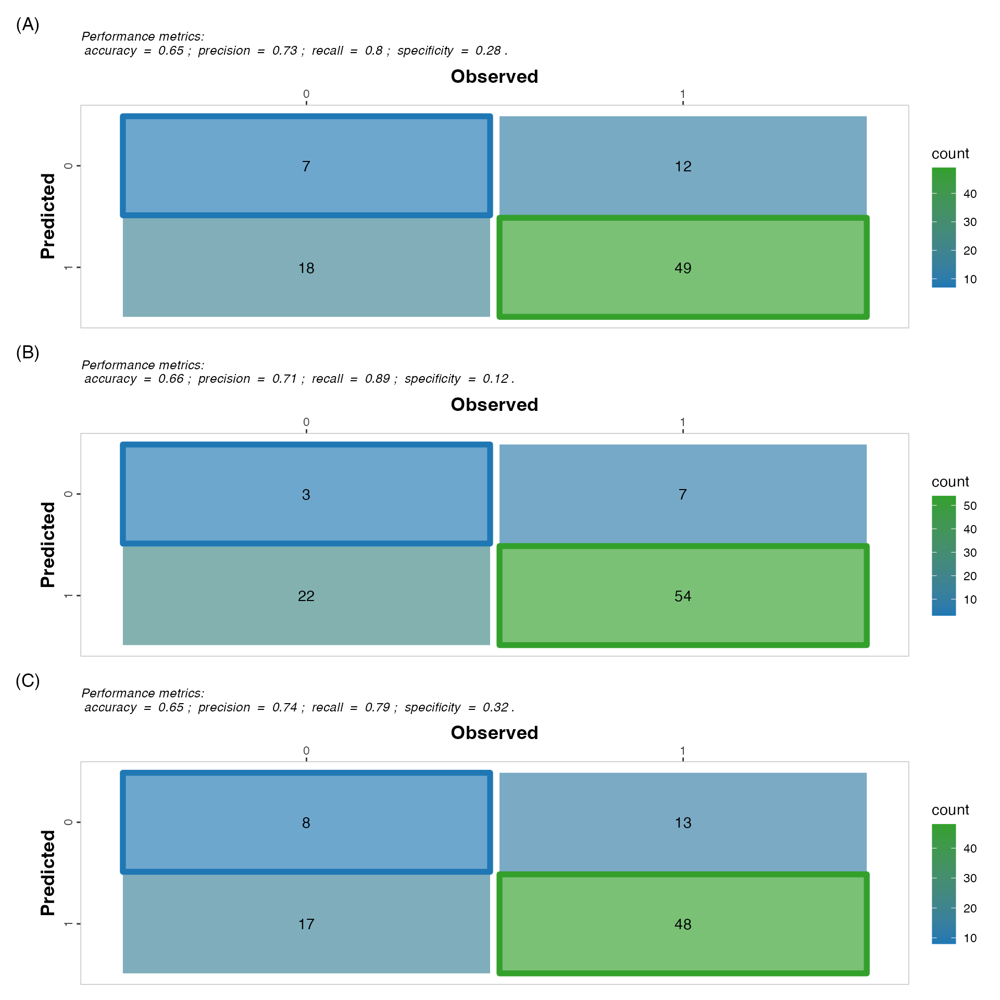
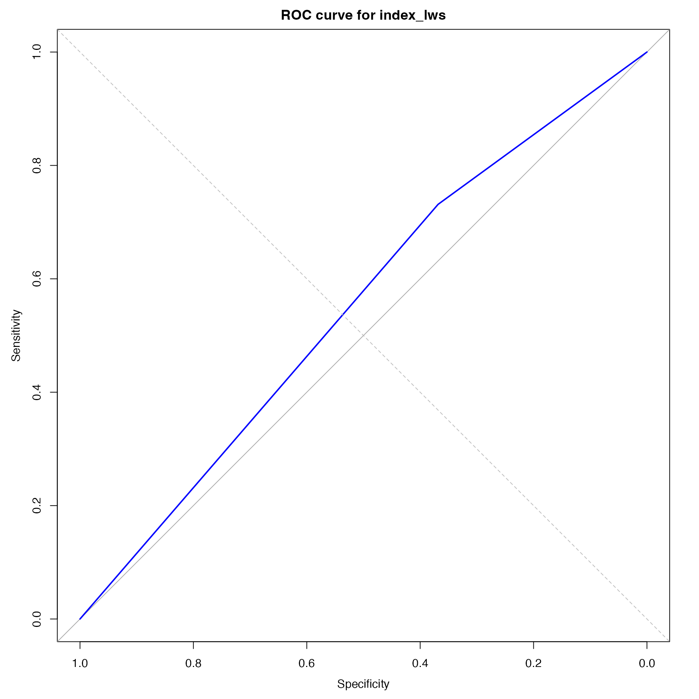
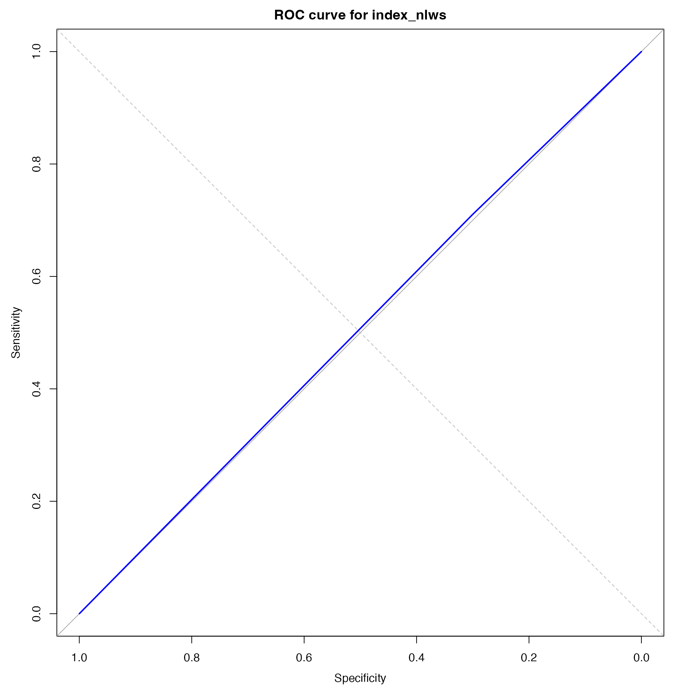

Boxwood blight infection risk model
Ihsan Khaliq
2024-07-15
Source:vignettes/a_03_BBIRM.Rmd
a_03_BBIRM.RmdLoad libraries
library("grDevices")
library("tidyverse")
library("viridis")
library("showtext")
library("here")
library("ggpubr")
library("extrafont")
library("tidyr")
library("lubridate")
library("readxl")
library("SDMTools")
library("kableExtra")
library("ragg")
library("ggthemes")
library("patchwork")
library("nasapower")
library("Metrics")
library("pROC")
library("metrica")
library("ggeffects")
library("ggpubr")
library("grid")
library("epiboxwoodblight")Import disease data data
Import disease data recorded at the Lowgap & Lamsburg sites
disease_dat <- read_excel(system.file(
"extdata",
"NC_disease_data.xlsx",
package = "epiboxwoodblight",
mustWork = TRUE
)) %>%
dplyr::mutate(year = as.factor(year)) %>%
dplyr::mutate(location = as.factor(location)) %>%
dplyr::mutate(spread_event = as.factor(spread_event)) %>%
dplyr::mutate(replicate = as.factor(replicate)) %>%
dplyr::mutate(treatment = as.factor(treatment)) %>%
dplyr::mutate(total_count = as.integer(total_count)) %>%
dplyr::mutate(month = as.factor(months(date_in))) %>%
dplyr::mutate(spev_duration = as.integer(difftime(date_out, date_in))) %>%
relocate(month, .after = date_out) %>%
na.omit() %>%
group_by(
year,
location,
spread_event,
month,
treatment,
date_in,
date_out,
cultivar,
spev_duration
) %>%
summarise(total_count = sum(total_count))## `summarise()` has grouped output by 'year', 'location', 'spread_event',
## 'month', 'treatment', 'date_in', 'date_out', 'cultivar'. You can override using
## the `.groups` argument.Import weather data
# Filter rainy periods to calculate average wind speed, wind direction & temperature wet period
weather_dat_rain <- read_excel(system.file(
"extdata",
"NC_weather_data.xlsx",
package = "epiboxwoodblight",
mustWork = TRUE
)) %>%
select(year,
wind_speed,
wind_direction,
temperature,
precipitation,
location,
spread_event) %>%
dplyr::mutate(year = as.factor(year)) %>%
dplyr::mutate(location = as.factor(location)) %>%
dplyr::mutate(spread_event = as.factor(spread_event)) %>%
dplyr::mutate(rain_duration = as.integer(precipitation > 0)) %>%
filter(precipitation > 0) %>%
group_by(year, location, spread_event) %>%
summarise(
total_rain = round(sum(precipitation), 5),
mean_ws = round(mean(wind_speed), 2),
rain_duration = round(sum(rain_duration * 15 / 60), 2),
mean_wd = round(circular.averaging(wind_direction), 2),
mean_temp = round(mean(temperature), 2)
)
# Filter rainless periods to calculate mean RH
weather_dat_no_rain <-
read_excel(system.file(
"extdata",
"NC_weather_data.xlsx",
package = "epiboxwoodblight",
mustWork = TRUE
)) %>%
select(
year,
relative_humidity,
leaf_wetness_duration,
precipitation,
location,
spread_event,
date
) %>%
dplyr::mutate(year = as.factor(year)) %>%
dplyr::mutate(location = as.factor(location)) %>%
dplyr::mutate(spread_event = as.factor(spread_event)) %>%
filter(precipitation == 0) %>%
group_by(year, location, spread_event) %>%
summarise(mean_rh = round(mean(relative_humidity * 100), 2))
# Combine data
weather_dat_comb <-
left_join(weather_dat_rain,
weather_dat_no_rain,
by = c("year", "location", "spread_event"))
# Leaf wetness duration both inside and outside rainy periods
weather_wet <- read_excel(system.file(
"extdata",
"NC_weather_data.xlsx",
package = "epiboxwoodblight",
mustWork = TRUE
)) %>%
dplyr::mutate(year = as.factor(year)) %>%
dplyr::mutate(location = as.factor(location)) %>%
dplyr::mutate(spread_event = as.factor(spread_event)) %>%
group_by(year, location, spread_event) %>%
summarise(lwd_duration = round(sum(leaf_wetness_duration / 60), 2))
weather_dat <-
left_join(weather_dat_comb,
weather_wet,
by = c("year", "location", "spread_event"))
# Divide week 1 of 2014 rain/rain duration/wetness duration by 4 & that of week 2 & 3 by 3 to convert to per week data because the duration of spread event was 4 and 3 weeks, respectively.
weather_dat <- weather_dat %>%
mutate(
total_rain = ifelse(
year == "2017" & spread_event == "1",
total_rain / 4,
ifelse(
year == "2017" &
spread_event %in% c("2", "3"),
total_rain / 3,
total_rain
)
),
rain_duration = ifelse(
year == "2017" & spread_event == "1",
rain_duration / 4,
ifelse(
year == "2017" &
spread_event %in% c("2", "3"),
rain_duration / 3,
rain_duration
)
),
lwd_duration = ifelse(
year == "2017" & spread_event == "1",
lwd_duration / 4,
ifelse(
year == "2017" &
spread_event %in% c("2", "3"),
lwd_duration / 3,
lwd_duration
)
)
)Cobmine weather & disease data
Combine weather and disease data
dat_NC <-
left_join(disease_dat,
weather_dat,
by = c("year", "location", "spread_event")) %>%
# Replace NA with zero because NA are introduced due to data munging. Original values were zero
dplyr::mutate(total_rain = replace_na(total_rain, 0)) %>%
dplyr::mutate(rain_duration = replace_na(rain_duration, 0))
# Since we filtered data separately for precipitation and then without precipitation, NAs are introduced. In this step, data (in which values were added manually) is imported
dat_missing <- read_excel(system.file(
"extdata",
"NC_missing_data.xlsx",
package = "epiboxwoodblight",
mustWork = TRUE
)) %>%
dplyr::mutate(year = as.factor(year)) %>%
dplyr::mutate(location = as.factor(location)) %>%
dplyr::mutate(spread_event = as.factor(spread_event))
# Combine data to replace NA values with distinct data
dat_nc <-
left_join(dat_NC, dat_missing, by = c("year", "location", "spread_event")) %>%
mutate(mean_ws = coalesce(mean_ws.x, mean_ws.y)) %>%
select(-mean_ws.x, -mean_ws.y) %>%
mutate(mean_temp = coalesce(mean_temp.x, mean_temp.y)) %>%
select(-mean_temp.x, -mean_temp.y) %>%
mutate(mean_rh = coalesce(mean_rh.x, mean_rh.y)) %>%
select(-mean_rh.x, -mean_rh.y) %>%
mutate(mean_wd = coalesce(mean_wd.x, mean_wd.y)) %>%
select(-mean_wd.x, -mean_wd.y) %>%
mutate(lwd_duration = coalesce(lwd_duration.x, lwd_duration.y)) %>%
select(-lwd_duration.x, -lwd_duration.y) %>%
distinct()
dat_nc <- dat_nc %>%
mutate(daily_rain = round(total_rain/spev_duration, 2),
daily_lwd = round(lwd_duration/spev_duration, 2))
# Filter out mulch treatment. Use non-mulch and CP only.
dat_nc_ncb <- dat_nc %>%
filter(treatment != "mulch", treatment != "between_row") # filter non-mulch, CP and between row treatments data
# Data considering only CP treatment
dat_cp <- dat_nc %>%
filter(treatment == "CP")
# Data considering only leaf debris treatment
dat_ld <- dat_nc %>%
filter(treatment == "non_mulch")
# Data considering only between row treatment
dat_br <- dat_nc %>%
filter(treatment == "between_row")
# Data for Lambsburg site only
dat_lambsburg <- dat_nc %>%
filter(location == "Lambsburg") %>%
filter(treatment != "mulch", treatment != "between_row")Boxwood blight infection risk model
Run Boxwood blight infection risk model. This the SENSOR-ADJ version of the model which uses leaf wetness recorded by the leaf wetness sensor
base_temperature <- 44
lookup_table <- read_excel(system.file(
"extdata",
"lookup_table.xlsx",
package = "epiboxwoodblight",
mustWork = TRUE
))
# WARNING: Double check for index_new (lookup_table) and index_anton (same but proportional wetness)
index <- read_excel(system.file(
"extdata",
"hourly_df_index_new.xlsx",
package = "epiboxwoodblight",
mustWork = TRUE
)) %>%
mutate(dry_hour_count = ifelse(lwd_duration == 0, sequence(rle(lwd_duration == 0)$lengths), 0)) %>%
mutate(mean_temp_f = round(mean_temp_f)) %>%
mutate(zero_index = lwd_duration == 0 | dry_hour_count > 5 | mean_temp_f < 44 | mean_temp_f > 86) %>%
group_by(year, location, spread_event, cumsum(dry_hour_count > 5)) %>%
# model version 1
mutate(index_new = cumsum(ifelse(zero_index, 0, mean_temp_f - base_temperature))) %>%
relocate(index, .before = index_new) %>%
left_join(lookup_table, by = "mean_temp_f") %>%
# model version 3
mutate(index_new = cumsum(ifelse(zero_index, 0, index_lookup))) %>%
mutate(index_new_anton = cumsum(ifelse(zero_index, 0, index_lookup) * lwd_duration / 60)) %>% # Proportional leaf wetness suggested by Anton
mutate(dhs_exceeding_250_anton = ifelse(index_new_anton >= 250, TRUE, FALSE),
index_rs_hour = ifelse(index_new_anton > 0, index_new_anton - lag(index_new_anton, default = 0), 0)) %>%
select(-`cumsum(dry_hour_count > 5)`, -zero_index)
# Find maximum value of index and whether disease is predicted or not, and combine with the data
index_cap <- index %>%
group_by(year, location, spread_event) %>%
summarise(max_index_value_rs = round(max(index_new_anton)),
disease_predicted_rs = ifelse(any(index_new_anton>= 250), 1, 0),
index_rs_week = round(sum(index_rs_hour)))
index <- left_join(index, index_cap, by = c("year", "location", "spread_event")) %>%
mutate(year = as.factor(year), spread_event = as.factor(spread_event))
# Finally, combine disease data with the index table
# Disease data
ncncb <- dat_nc_ncb %>%
select(spread_event, year, location, total_count) %>%
mutate(year = as.factor(year), spread_event = as.factor(spread_event)) %>%
group_by(year, location, spread_event) %>%
summarise(total_count_index = sum(total_count),
epidemic_week = ifelse(total_count>298, "Yes", "No"))
index <- left_join(index, ncncb, by = c("year", "location", "spread_event")) %>%
mutate(year = as.factor(year), spread_event = as.factor(spread_event)) Model comparison
Compare the model using three different leaf wetness criteria.
lws represents SENSOR model rs
represents SENSOR-ADJ model nlws represents
ESTIM-LW model
# Import data and calculate hourly and weekly index
comparison_dat1 <- read_excel(
system.file(
"extdata",
"Indices_validation_data_new.xlsx",
package = "epiboxwoodblight",
mustWork = TRUE
)
) %>%
mutate(year = as.factor(year)) %>%
mutate(location = as.factor(location)) %>%
mutate(week = as.factor(week)) %>%
group_by(year, location, week) %>%
mutate(
index_lws_hour = ifelse(index_lws > 0, index_lws - lag(index_lws, default = 0), 0),
index_lws_week = sum(index_lws_hour),
disease_predicted_lws = ifelse(any(index_lws >= 250), "Yes", "No"),
max_index_value_lws = max(index_lws),
index_nlws_hour = ifelse(index_nlws > 0, index_nlws - lag(index_nlws, default = 0), 0),
disease_predicted_nlws = ifelse(any(index_nlws >= 250), "Yes", "No"),
max_index_value_nlws = max(index_nlws),
index_nlws_week = sum(index_nlws_hour)
) %>%
ungroup()
#openxlsx::write.xlsx(comparison_dat1, "indices_lc.xlsx")
comparison_dat2 <- comparison_dat1 %>%
group_by(year, location, week) %>%
summarise(
disease_predicted_lws = ifelse(any(index_lws >= 250), 1, 0),
max_index_value_lws = max(index_lws),
max_index_value_nlws = max(index_nlws),
index_lws_week = sum(index_lws_hour),
index_nlws_week = sum(index_nlws_hour),
disease_predicted_nlws = ifelse(any(index_nlws >= 250), 1, 0)
) %>%
ungroup()
# Disease data
ncncb <- dat_nc %>%
filter(treatment != "mulch") %>%
rename(week = spread_event) %>%
group_by(year, location, week) %>%
summarise(
disease_recorded_detector_plants = ifelse(any(total_count > 0), 1, 0),
total_count = sum(total_count)
)
comparison_dat3 <-
left_join(comparison_dat2, ncncb, by = c("year", "location", "week"))
# Join index that was re-started each week
index_rs <- index_cap %>%
rename(week = spread_event) %>%
mutate(year = as.factor(year),
week = as.factor(week))
comparison_dat4 <-
left_join(comparison_dat3, index_rs, by = c("year", "location", "week"))Totat weekly accumulated blight risk index & infected leaf count relationship
GLMs
set.seed(42)
dat_2014 <- comparison_dat4 %>%
filter(year==2014)
dat_2015 <- comparison_dat4 %>%
filter(year==2015)
dat_2016 <- comparison_dat4 %>%
filter(year==2016)
dat_2017 <- comparison_dat4 %>%
filter(year==2017)
# Fit & plot LWS models for each year
lws_2014 <- glm(total_count ~ index_lws_week, family = quasipoisson, data= dat_2014)
summary(lws_2014)##
## Call:
## glm(formula = total_count ~ index_lws_week, family = quasipoisson,
## data = dat_2014)
##
## Deviance Residuals:
## Min 1Q Median 3Q Max
## -15.0445 -7.9139 -5.2653 -0.4034 26.2879
##
## Coefficients:
## Estimate Std. Error t value Pr(>|t|)
## (Intercept) 2.2379339 0.9484794 2.359 0.0298 *
## index_lws_week 0.0010134 0.0003597 2.817 0.0114 *
## ---
## Signif. codes: 0 '***' 0.001 '**' 0.01 '*' 0.05 '.' 0.1 ' ' 1
##
## (Dispersion parameter for quasipoisson family taken to be 158.4062)
##
## Null deviance: 3507.2 on 19 degrees of freedom
## Residual deviance: 2202.2 on 18 degrees of freedom
## AIC: NA
##
## Number of Fisher Scoring iterations: 6
#calculate McFadden's R-squared for model
r_squared_lws_2014 <- with(summary(lws_2014), 1 - deviance/null.deviance)
lws_2015 <- glm(total_count ~ index_lws_week, family = quasipoisson, data= dat_2015)
summary(lws_2015)##
## Call:
## glm(formula = total_count ~ index_lws_week, family = quasipoisson,
## data = dat_2015)
##
## Deviance Residuals:
## Min 1Q Median 3Q Max
## -18.438 -9.262 -6.074 3.491 40.719
##
## Coefficients:
## Estimate Std. Error t value Pr(>|t|)
## (Intercept) 2.8726576 0.6883836 4.173 0.00034 ***
## index_lws_week 0.0014324 0.0003634 3.942 0.00061 ***
## ---
## Signif. codes: 0 '***' 0.001 '**' 0.01 '*' 0.05 '.' 0.1 ' ' 1
##
## (Dispersion parameter for quasipoisson family taken to be 235.5526)
##
## Null deviance: 7584.1 on 25 degrees of freedom
## Residual deviance: 4010.6 on 24 degrees of freedom
## AIC: NA
##
## Number of Fisher Scoring iterations: 6
#calculate McFadden's R-squared for model
r_squared_lws_2015 <- with(summary(lws_2015), 1 - deviance/null.deviance)
lws_2016 <- glm(total_count ~ index_lws_week, family = quasipoisson, data= dat_2016)
summary(lws_2016)##
## Call:
## glm(formula = total_count ~ index_lws_week, family = quasipoisson,
## data = dat_2016)
##
## Deviance Residuals:
## Min 1Q Median 3Q Max
## -11.048 -9.626 -8.385 -7.127 43.574
##
## Coefficients:
## Estimate Std. Error t value Pr(>|t|)
## (Intercept) 3.6805521 1.0068709 3.655 0.00139 **
## index_lws_week 0.0002833 0.0005771 0.491 0.62834
## ---
## Signif. codes: 0 '***' 0.001 '**' 0.01 '*' 0.05 '.' 0.1 ' ' 1
##
## (Dispersion parameter for quasipoisson family taken to be 341.6754)
##
## Null deviance: 4096.4 on 23 degrees of freedom
## Residual deviance: 4011.3 on 22 degrees of freedom
## AIC: NA
##
## Number of Fisher Scoring iterations: 6
#calculate McFadden's R-squared for model
r_squared_lws_2016 <- with(summary(lws_2016), 1 - deviance/null.deviance)
lws_2017 <- glm(total_count ~ index_lws_week, family = quasipoisson, data= dat_2017)
summary(lws_2017)##
## Call:
## glm(formula = total_count ~ index_lws_week, family = quasipoisson,
## data = dat_2017)
##
## Deviance Residuals:
## Min 1Q Median 3Q Max
## -13.5926 -5.4541 -2.6242 0.2849 14.0736
##
## Coefficients:
## Estimate Std. Error t value Pr(>|t|)
## (Intercept) -1.4801073 2.1115755 -0.701 0.4948
## index_lws_week 0.0021936 0.0009327 2.352 0.0338 *
## ---
## Signif. codes: 0 '***' 0.001 '**' 0.01 '*' 0.05 '.' 0.1 ' ' 1
##
## (Dispersion parameter for quasipoisson family taken to be 47.68894)
##
## Null deviance: 950.55 on 15 degrees of freedom
## Residual deviance: 666.81 on 14 degrees of freedom
## AIC: NA
##
## Number of Fisher Scoring iterations: 7
#calculate McFadden's R-squared for model
r_squared_lws_2017 <- with(summary(lws_2017), 1 - deviance/null.deviance)
# plot all LWS models
Lws_1 <-
plot(ggpredict(lws_2014, "index_lws_week"), rawdata = TRUE) +
labs(x = "", y = "Number of infected leaves", title = 2014) +
coord_cartesian(ylim = c(0, 1000), xlim = c(0, 3000)) +
annotate("text",
x = c(750, 750),
y = c(700, 800),
label =c("R²= 0.37", "p=0.0114")) +
theme_few() +
theme(plot.title = element_text(hjust = 0.5),
axis.text.x = element_blank()) +
theme(aspect.ratio = 1)
Lws_2 <-
plot(ggpredict(lws_2015, "index_lws_week"), rawdata = TRUE) +
labs(x = "", y = "", title = 2015) +
coord_cartesian(ylim = c(0, 1000), xlim = c(0, 3000)) +
annotate("text",
x = c(750, 750),
y = c(700, 800),
label =c("R²= 0.47", "p=0.0006")) +
theme_few() +
theme(plot.title = element_text(hjust = 0.5),
axis.text.x = element_blank(),
axis.text.y = element_blank()) +
theme(aspect.ratio = 1)
Lws_3 <-
plot(ggpredict(lws_2016, "index_lws_week"), rawdata = TRUE) +
labs(x = "LWS model", y = "", title = 2016) +
coord_cartesian(ylim=c(0, 1000),xlim = c(0, 3000)) +
annotate("text",
x = c(750, 750),
y = c(700, 800),
label =c("R²= 0.02", "p=0.6283")) +
theme_few() +
theme(plot.title = element_text(hjust = 0.5)) +
theme(aspect.ratio = 1)
Lws_4 <-
plot(ggpredict(lws_2017, "index_lws_week"), rawdata = TRUE) +
labs(x = "LWS model", y = "", title = 2017) +
coord_cartesian(ylim=c(0, 1000),xlim = c(0, 3000)) +
annotate("text",
x = c(750, 750),
y = c(700, 800),
label =c("R²= 0.3", "p=0.0338")) +
theme_few() +
theme(plot.title = element_text(hjust = 0.5),
axis.text.y = element_blank()) +
theme(aspect.ratio = 1)
lws_plots <- (Lws_1 +Lws_2)/ (Lws_3+ Lws_4) +
plot_layout(widths = c(1, 1), heights = c(1, 1))
# Fit and plot NLWS models for each year & then combine plots for all four years
nlws_2014 <- glm(total_count ~ index_nlws_week, family = quasipoisson, data= dat_2014)
summary(nlws_2014)##
## Call:
## glm(formula = total_count ~ index_nlws_week, family = quasipoisson,
## data = dat_2014)
##
## Deviance Residuals:
## Min 1Q Median 3Q Max
## -13.057 -10.599 -8.280 -3.207 32.476
##
## Coefficients:
## Estimate Std. Error t value Pr(>|t|)
## (Intercept) 2.7088248 1.4978372 1.808 0.0873 .
## index_nlws_week 0.0006264 0.0005147 1.217 0.2393
## ---
## Signif. codes: 0 '***' 0.001 '**' 0.01 '*' 0.05 '.' 0.1 ' ' 1
##
## (Dispersion parameter for quasipoisson family taken to be 255.947)
##
## Null deviance: 3507.2 on 19 degrees of freedom
## Residual deviance: 3053.4 on 18 degrees of freedom
## AIC: NA
##
## Number of Fisher Scoring iterations: 7
#calculate McFadden's R-squared for model
r_squared_nlws_2014 <- with(summary(nlws_2014), 1 - deviance/null.deviance)
nlws_2015 <- glm(total_count ~ index_nlws_week, family = quasipoisson, data= dat_2015)
summary(nlws_2015)##
## Call:
## glm(formula = total_count ~ index_nlws_week, family = quasipoisson,
## data = dat_2015)
##
## Deviance Residuals:
## Min 1Q Median 3Q Max
## -24.746 -12.699 -7.057 3.373 37.809
##
## Coefficients:
## Estimate Std. Error t value Pr(>|t|)
## (Intercept) 2.2758071 1.2100757 1.881 0.0722 .
## index_nlws_week 0.0010608 0.0004427 2.396 0.0247 *
## ---
## Signif. codes: 0 '***' 0.001 '**' 0.01 '*' 0.05 '.' 0.1 ' ' 1
##
## (Dispersion parameter for quasipoisson family taken to be 270.8002)
##
## Null deviance: 7584.1 on 25 degrees of freedom
## Residual deviance: 5715.7 on 24 degrees of freedom
## AIC: NA
##
## Number of Fisher Scoring iterations: 6
#calculate McFadden's R-squared for model
r_squared_nlws_2015 <- with(summary(nlws_2015), 1 - deviance/null.deviance)
nlws_2016 <- glm(total_count ~ index_nlws_week, family = quasipoisson, data= dat_2016)
summary(nlws_2016)##
## Call:
## glm(formula = total_count ~ index_nlws_week, family = quasipoisson,
## data = dat_2016)
##
## Deviance Residuals:
## Min 1Q Median 3Q Max
## -11.225 -9.305 -8.120 -6.792 43.554
##
## Coefficients:
## Estimate Std. Error t value Pr(>|t|)
## (Intercept) 3.6027154 1.0619616 3.393 0.00262 **
## index_nlws_week 0.0002467 0.0004493 0.549 0.58844
## ---
## Signif. codes: 0 '***' 0.001 '**' 0.01 '*' 0.05 '.' 0.1 ' ' 1
##
## (Dispersion parameter for quasipoisson family taken to be 341.3815)
##
## Null deviance: 4096.4 on 23 degrees of freedom
## Residual deviance: 3989.2 on 22 degrees of freedom
## AIC: NA
##
## Number of Fisher Scoring iterations: 7
#calculate McFadden's R-squared for model
r_squared_nlws_2016 <- with(summary(nlws_2016), 1 - deviance/null.deviance)
nlws_2017 <- glm(total_count ~ index_nlws_week, family = quasipoisson, data= dat_2017)
summary(nlws_2017)##
## Call:
## glm(formula = total_count ~ index_nlws_week, family = quasipoisson,
## data = dat_2017)
##
## Deviance Residuals:
## Min 1Q Median 3Q Max
## -12.7142 -4.7841 -3.5733 -0.3992 13.9502
##
## Coefficients:
## Estimate Std. Error t value Pr(>|t|)
## (Intercept) -0.0641031 1.7630515 -0.036 0.9715
## index_nlws_week 0.0011282 0.0005759 1.959 0.0703 .
## ---
## Signif. codes: 0 '***' 0.001 '**' 0.01 '*' 0.05 '.' 0.1 ' ' 1
##
## (Dispersion parameter for quasipoisson family taken to be 58.10312)
##
## Null deviance: 950.55 on 15 degrees of freedom
## Residual deviance: 735.59 on 14 degrees of freedom
## AIC: NA
##
## Number of Fisher Scoring iterations: 7
#calculate McFadden's R-squared for model
r_squared_nlws_2017 <- with(summary(nlws_2017), 1 - deviance/null.deviance)
# plot all NLWS models
Nlws_1 <-
plot(ggpredict(nlws_2014, "index_nlws_week"), rawdata = TRUE) +
labs(x = "", y = "", title = 2014) +
coord_cartesian(ylim = c(0, 1000), xlim = c(0, 3000)) +
annotate("text",
x = c(750, 750),
y = c(700, 800),
label =c("R²= 0.13", "p=0.2393")) +
theme_few() +
theme(plot.title = element_text(hjust = 0.5),
axis.text.x = element_blank(),
axis.text.y = element_blank()) +
theme(aspect.ratio = 1)
Nlws_2 <-
plot(ggpredict(nlws_2015, "index_nlws_week"), rawdata = TRUE) +
labs(x = "", y = "", title = 2015) +
coord_cartesian(ylim = c(0, 1000), xlim = c(0, 3000)) +
annotate("text",
x = c(750, 750),
y = c(700, 800),
label =c("R²= 0.25", "p=0.0247")) +
theme_few() +
theme(plot.title = element_text(hjust = 0.5),
axis.text.x = element_blank(),
axis.text.y = element_blank()) +
theme(aspect.ratio = 1)
Nlws_3 <-
plot(ggpredict(nlws_2016, "index_nlws_week"), rawdata = TRUE) +
labs(x = "NLWS model", y = "", title = 2016) +
coord_cartesian(ylim=c(0, 1000),xlim = c(0, 3000)) +
annotate("text",
x = c(750, 750),
y = c(700, 800),
label =c("R²= 0.03", "p=0.5884")) +
theme_few() +
theme(plot.title = element_text(hjust = 0.5),
axis.text.y = element_blank()) +
theme(aspect.ratio = 1)
Nlws_4 <-
plot(ggpredict(nlws_2017, "index_nlws_week"), rawdata = TRUE) +
labs(x = "NLWS model", y = "", title = 2017) +
coord_cartesian(ylim=c(0, 1000),xlim = c(0, 3000)) +
annotate("text",
x = c(750, 750),
y = c(700, 800),
label =c("R²= 0.23", "p=0.0703")) +
theme_few() +
theme(plot.title = element_text(hjust = 0.5),
axis.text.y = element_blank()) +
theme(aspect.ratio = 1)
Nlws_plots <- (Nlws_1 +Nlws_2)/ (Nlws_3+ Nlws_4) +
plot_layout(widths = c(1, 1), heights = c(1, 1))
# Nlws_plots <- annotate_figure(Nlws_plots, left = textGrob("Number of infected leaves", rot = 90, vjust = 1), bottom = textGrob(""))
# Fit and plot RS models for each year & then combine plots for all four years
rs_2014 <- glm(total_count ~ index_rs_week, family = quasipoisson, data= dat_2014)
summary(rs_2014)##
## Call:
## glm(formula = total_count ~ index_rs_week, family = quasipoisson,
## data = dat_2014)
##
## Deviance Residuals:
## Min 1Q Median 3Q Max
## -14.9030 -7.9578 -5.0701 -0.4303 25.8995
##
## Coefficients:
## Estimate Std. Error t value Pr(>|t|)
## (Intercept) 2.1682356 0.9466880 2.290 0.03429 *
## index_rs_week 0.0010756 0.0003692 2.913 0.00927 **
## ---
## Signif. codes: 0 '***' 0.001 '**' 0.01 '*' 0.05 '.' 0.1 ' ' 1
##
## (Dispersion parameter for quasipoisson family taken to be 151.4254)
##
## Null deviance: 3507.2 on 19 degrees of freedom
## Residual deviance: 2149.0 on 18 degrees of freedom
## AIC: NA
##
## Number of Fisher Scoring iterations: 6
#calculate McFadden's R-squared for model
r_squared_rs_2014 <- with(summary(rs_2014), 1 - deviance/null.deviance)
rs_2015 <- glm(total_count ~ index_rs_week, family = quasipoisson, data= dat_2015)
summary(rs_2015)##
## Call:
## glm(formula = total_count ~ index_rs_week, family = quasipoisson,
## data = dat_2015)
##
## Deviance Residuals:
## Min 1Q Median 3Q Max
## -18.831 -9.250 -5.709 2.297 39.880
##
## Coefficients:
## Estimate Std. Error t value Pr(>|t|)
## (Intercept) 2.9260693 0.6517106 4.490 0.000152 ***
## index_rs_week 0.0014397 0.0003489 4.127 0.000383 ***
## ---
## Signif. codes: 0 '***' 0.001 '**' 0.01 '*' 0.05 '.' 0.1 ' ' 1
##
## (Dispersion parameter for quasipoisson family taken to be 225.8005)
##
## Null deviance: 7584.1 on 25 degrees of freedom
## Residual deviance: 3916.6 on 24 degrees of freedom
## AIC: NA
##
## Number of Fisher Scoring iterations: 6
#calculate McFadden's R-squared for model
r_squared_rs_2015 <- with(summary(rs_2015), 1 - deviance/null.deviance)
rs_2016 <- glm(total_count ~ index_rs_week, family = quasipoisson, data= dat_2016)
summary(rs_2016)##
## Call:
## glm(formula = total_count ~ index_rs_week, family = quasipoisson,
## data = dat_2016)
##
## Deviance Residuals:
## Min 1Q Median 3Q Max
## -11.238 -9.541 -8.301 -6.973 43.439
##
## Coefficients:
## Estimate Std. Error t value Pr(>|t|)
## (Intercept) 3.6485311 1.0126663 3.603 0.00158 **
## index_rs_week 0.0003176 0.0006015 0.528 0.60280
## ---
## Signif. codes: 0 '***' 0.001 '**' 0.01 '*' 0.05 '.' 0.1 ' ' 1
##
## (Dispersion parameter for quasipoisson family taken to be 338.8323)
##
## Null deviance: 4096.4 on 23 degrees of freedom
## Residual deviance: 3998.0 on 22 degrees of freedom
## AIC: NA
##
## Number of Fisher Scoring iterations: 6
#calculate McFadden's R-squared for model
r_squared_rs_2016 <- with(summary(rs_2016), 1 - deviance/null.deviance)
rs_2017 <- glm(total_count ~ index_rs_week, family = quasipoisson, data= dat_2017)
summary(rs_2017)##
## Call:
## glm(formula = total_count ~ index_rs_week, family = quasipoisson,
## data = dat_2017)
##
## Deviance Residuals:
## Min 1Q Median 3Q Max
## -14.0856 -4.8697 -2.1900 0.3873 11.9836
##
## Coefficients:
## Estimate Std. Error t value Pr(>|t|)
## (Intercept) -2.3052474 2.0869813 -1.105 0.2880
## index_rs_week 0.0026681 0.0009413 2.835 0.0132 *
## ---
## Signif. codes: 0 '***' 0.001 '**' 0.01 '*' 0.05 '.' 0.1 ' ' 1
##
## (Dispersion parameter for quasipoisson family taken to be 38.11435)
##
## Null deviance: 950.55 on 15 degrees of freedom
## Residual deviance: 592.01 on 14 degrees of freedom
## AIC: NA
##
## Number of Fisher Scoring iterations: 6
#calculate McFadden's R-squared for model
r_squared_rs_2017 <- with(summary(rs_2017), 1 - deviance/null.deviance)
# plot all NLWS models
rs_1 <-
plot(ggpredict(rs_2014, "index_rs_week"), rawdata = TRUE) +
labs(x = "", y = "", title = 2014) +
coord_cartesian(ylim = c(0, 1000), xlim = c(0, 3000)) +
annotate("text",
x = c(750, 750),
y = c(700, 800),
label =c("R²= 0.39", "p=0.0092")) +
theme_few() +
theme(plot.title = element_text(hjust = 0.5),
axis.text.x = element_blank(),
axis.text.y = element_blank()) +
theme(aspect.ratio = 1)
rs_2 <-
plot(ggpredict(rs_2015, "index_rs_week"), rawdata = TRUE) +
labs(x = "", y = "", title = 2015) +
coord_cartesian(ylim = c(0, 1000), xlim = c(0, 3000)) +
annotate("text",
x = c(750, 750),
y = c(700, 800),
label =c("R²= 0.48", "p=0.0003")) +
theme_few() +
theme(plot.title = element_text(hjust = 0.5),
axis.text.x = element_blank(),
axis.text.y = element_blank()) +
theme(aspect.ratio = 1)
rs_3 <-
plot(ggpredict(rs_2016, "index_rs_week"), rawdata = TRUE) +
labs(x = "RS model", y = "", title = 2016) +
coord_cartesian(ylim=c(0, 1000),xlim = c(0, 3000)) +
annotate("text",
x = c(750, 750),
y = c(700, 800),
label =c("R²= 0.02", "p=0.6028")) +
theme_few() +
theme(plot.title = element_text(hjust = 0.5),
axis.text.y = element_blank()) +
theme(aspect.ratio = 1)
rs_4 <-
plot(ggpredict(rs_2017, "index_rs_week"), rawdata = TRUE) +
labs(x = "RS model", y = "", title = 2017) +
coord_cartesian(ylim=c(0, 1000),xlim = c(0, 3000)) +
annotate("text",
x = c(750, 750),
y = c(700, 800),
label =c("R²= 0.38", "p=0.0132")) +
theme_few() +
theme(plot.title = element_text(hjust = 0.5),
axis.text.y = element_blank()) +
theme(aspect.ratio = 1)
rs_plots <- (rs_1 + rs_2)/ (rs_3+ rs_4) +
plot_layout(widths = c(1, 1), heights = c(1, 1))
# rs_plots <- annotate_figure(rs_plots, left = textGrob("Number of infected leaves", rot = 90, vjust = 1))
fig_index_lesions <- wrap_plots(lws_plots, Nlws_plots, rs_plots)
ggsave(
here("man", "figures/fig_index_lesions.png"),
plot = fig_index_lesions,
width = 14,
height = 6,
units = "in",
dpi = 600
)
fig_index_lesions 
Plot total weekly accumulated blight risk index values
dat_weeeek <- dat_nc_ncb %>%
mutate(date_in = format(date_in, "%m/%d")) %>%
group_by(year, date_in) %>%
arrange(year, date_in, total_count) %>%
ungroup() %>%
mutate(date_in = as.factor(date_in)) %>%
mutate(treatment = recode(treatment,
"CP" = "Infected canopies",
"non_mulch" = "Leaf debris")) %>%
rename("Inoculum source" = treatment) %>%
select(date_in,
year,
location,
spread_event,
total_count,
`Inoculum source`)
comparison_dat_6 <- comparison_dat4 %>%
rename(spread_event = week) %>%
pivot_longer(
cols = c("index_lws_week",
"index_nlws_week",
"index_rs_week"),
names_to = "Model",
values_to = "index_weekly_value"
)
index_dfff <- comparison_dat_6 %>%
mutate(
Model = recode(
Model,
"index_rs_week" = "SENSOR-ADJ model",
"index_lws_week" = "SENSOR model",
"index_nlws_week" = "ESTIM-LW model"
)
)
dat_week <-
left_join(dat_weeeek,
index_dfff,
by = c("year", "location", "spread_event")) %>%
distinct(year, location, spread_event, Model, .keep_all = TRUE)
openxlsx::write.xlsx(dat_week, "check.xlsx")
dates_weeks <- dat_week |>
mutate(date = mdy(paste0(date_in, year)),
week = week(date)) %>%
mutate(week = ifelse(year == 2015 & spread_event == 24, 43, week))
min_week <- min(dates_weeks$week)
max_week <- max(dates_weeks$week)
year_breaks <- 2017:2014 |>
set_names() |>
map(\(year_n) {
year_dat <- dates_weeks |>
filter(year == year_n) |>
select(date_in, week) |>
unique()
week_map <- character(max_week - min_week + 1)
names(week_map) <- seq(min_week, max_week)
week_map[as.character(year_dat$week)] <-
as.character(year_dat$date_in)
week_map
})
p <- dates_weeks |>
mutate(week = factor(week),
`Inoculum source` = factor(`Inoculum source`)) |>
nest(data = -year) |>
mutate(pl = map2(data, year, \(data, year) {
# browser()
ggplot(data, aes(x = week, y = index_weekly_value, fill = Model)) +
geom_col(position = position_dodge(width = 0.7)) +
coord_cartesian(ylim = c(4, 8603)) +
# scale_y_continuous(breaks = seq(0, 334305, length.out = 5), limits = c(0, 334305),
# labels = function(x) sprintf("%.0f", x)) +
scale_x_discrete(labels = year_breaks[[as.character(year)]],
drop = FALSE) +
facet_wrap(year, scales = "free_y", strip.position = "right") +
# scale_fill_manual(values = c(
# "max_index_value_rs"= "navyblue",
# "max_index_value_lws" = "green",
# "max_index_value_nlws"= "darkred"
# )) +
scale_fill_viridis_d(option = "cividis") +
theme_few(base_size = 10)
})) |>
pull(pl) |>
wrap_plots(ncol = 1) +
plot_layout(guides = "collect") & xlab(NULL) & ylab(NULL) &
theme(
legend.position = "top",
axis.text.x = element_text(
angle = 90,
hjust = 1,
vjust = 0.5,
color = "black"
),
axis.text.y = element_text(vjust = 0.5, color = "black"),
axis.title = element_text(color = "black"),
strip.text = element_text(face = "bold", color = "black")
)
p <-
p + labs(x = "Date of detector plants placement in the field") +
theme(axis.title.x = element_text(hjust = 0.5)) # Center x-axis label
p_sum_index <- wrap_elements(p) +
labs(tag = "Total weekly accumulated blight risk index") +
theme(plot.tag = element_text(size = rel(1), angle = 90),
plot.tag.position = "left")
ggsave(
here("man", "figures/p_sum_index.png"),
plot = p_sum_index,
width = 7,
height = 7,
units = "in",
dpi = 1000
)
ggsave(
here("man", "figures/p_sum_index.eps"),
plot = p_sum_index,
width = 7,
height = 7,
units = "in",
dpi = 600,
device = cairo_ps
)
p_sum_index
Quantitative comparison of the model using different leaf wetness criteria
Confusion matrices
disease_predicted_lws <-
factor(comparison_dat4$disease_predicted_lws)
disease_predicted_nlws <-
factor(comparison_dat4$disease_predicted_nlws)
disease_predicted_rs <- factor(comparison_dat4$disease_predicted_rs)
disease_recorded <-
factor(comparison_dat4$disease_recorded_detector_plants)
confusion_matrix_lws <-
metrica::confusion_matrix(
obs = disease_recorded,
pred = disease_predicted_lws,
plot = TRUE,
print_metrics = TRUE,
metrics_list = c("accuracy", "precision", "recall", "specificity"),
position_metrics = "top",
colors = c(low = "#1f78b4", high = "#33a02c"),
na.rm = TRUE
)
confusion_matrix_nlws <-
metrica::confusion_matrix(
obs = disease_recorded,
pred = disease_predicted_nlws,
plot = TRUE,
print_metrics = TRUE,
metrics_list = c("accuracy", "precision", "recall", "specificity"),
position_metrics = "top",
colors = c(low = "#1f78b4", high = "#33a02c"),
na.rm = TRUE
)
confusion_matrix_rs <-
metrica::confusion_matrix(
obs = disease_recorded,
pred = disease_predicted_rs,
plot = TRUE,
print_metrics = TRUE,
metrics_list = c("accuracy", "precision", "recall", "specificity"),
position_metrics = "top",
colors = c(low = "#1f78b4", high = "#33a02c"),
na.rm = TRUE
)
fig_matrix <-
confusion_matrix_lws + confusion_matrix_nlws + confusion_matrix_rs + plot_layout(ncol =
1, tag_level = 'new') +
plot_annotation(tag_levels = list(c('(A)', '(B)', '(C)')))
fig_matrix
F1 scores
# Calculate accuracy
accuracy_rs <- mean(disease_predicted_rs == disease_recorded)
# Calculate precision
precision_rs <-
sum(disease_predicted_rs == 1 &
disease_recorded == 1) / sum(disease_predicted_rs == 1)
# Calculate recall
recall_rs <-
sum(disease_predicted_rs == 1 &
disease_recorded == 1) / sum(disease_recorded == 1)
# Calculate F1-score
f1_score_rs <-
round(2 * (precision_rs * recall_rs) / (precision_rs + recall_rs), 2)Reciever Operating Characteristics Curve (ROC)
roc_lws <-
pROC::roc(as.integer(disease_predicted_lws),
as.integer(disease_recorded))## Setting levels: control = 1, case = 2## Setting direction: controls < cases
roc_plot_lws <-
plot(roc_lws, main = "ROC curve for index_lws", col = "blue")
abline(0, 1, lty = 2, col = "gray")
roc_nlws <-
pROC::roc(as.integer(disease_predicted_nlws),
as.integer(disease_recorded))## Setting levels: control = 1, case = 2
## Setting direction: controls < cases
roc_plot_nlws <-
plot(roc_nlws, main = "ROC curve for index_nlws", col = "blue")
abline(0, 1, lty = 2, col = "gray")
roc_rs <-
pROC::roc(as.integer(disease_predicted_rs),
as.integer(disease_recorded))## Setting levels: control = 1, case = 2
## Setting direction: controls < cases
roc_plot_rs <-
plot(roc_rs, main = "ROC curve for index_rx", col = "blue")
abline(0, 1, lty = 2, col = "gray")